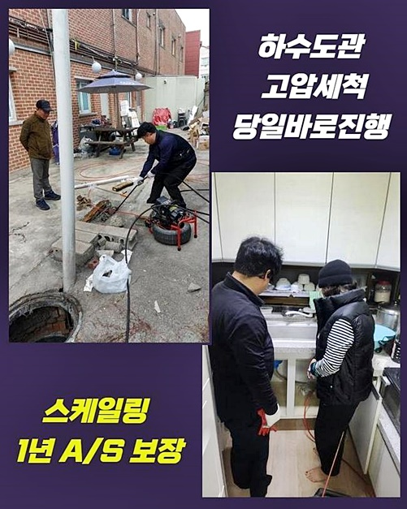
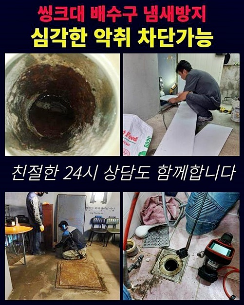
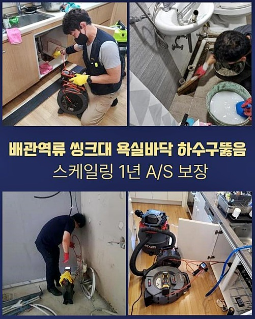
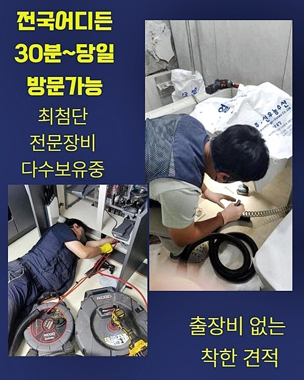

🏠 수원 신안동씽크대역류 인계동 하수구뚫어주는업체 배관공사
수원 싱크대막힘 전문 시공 후기

📋 작업 개요
- 위치: 수원
- 서비스 유형: 싱크대막힘, 하수구막힘, 배관막힘, 누수수리, 역류해결, 뚫는업체, 배관청소, 고압세척, 설비공사
- 작업 일시: 2024. 7. 12. 21:37
- 업체명: 하수구수사대 (010-5615-2118)
🔍 문제 상황
수원 신안동씽크대역류 인계동 하수구뚫어주는업체 배관공사
간소한 배수장애가 아닌때에는 배수로를 꼼꼼하게 들여봐야될 필요성들이 존재합니다
피부에 와 닿는 증세가 안보여도 퇴적된 잔여물질은 부피가 늘어나 만성적인 이차적인 증세들로 나타납니다
아파트등에 거주하는 고객분이면 막히게되어 예상치못하게 이웃에게도 피해들을 끼칠 수 있어서 현 상황에서 이상징후가 보이면 조속히 이유를 파헤쳐야 해요
왜냐면 하수배출 오류는 심화되어서 역류들이 발생되거나 누수증세가 발발할 확률들이 많았기에 도움 요청을 조속히 행하면 피해들을 피할 수 있어요
그렇기에 배관 관련 지식이 뛰어난 시점에서 방치하지말고 수습하는것을 지속적으로 안내하는 내막도 해당 사안으로 인해 그런것입니다
많은 인원이 사는 건물의 경우 하수관이 연결된채로 있어서 다른 장소로 물들이 이동해요
설명드릴 장소는 상업점포와 주거지들이 자리하고있는 건축물 내측에서 발생되었어요
이러한 구조에서는 라인이 다양할 확률이 많습니다
금일 내방했던 곳에서는 전형적인 모습으로 보여졌어요
방문드린 건축물 내측에서도 주거지에서 문제가 생겨났다고 설명해주셔서 그 위치로 발걸음을 옮겼죠
당도하여 구조를 파악해보니 안심할 수 있었던 점은 밑의집엔 결함은 없어보였고 아래는 화장실로서 우선적으로 검수를 진행했어요

🔎 원인 분석
💡 전문가 진단: 정밀 진단 장비를 사용하여 슬러지의 고착 여부를 판명하고 타격/세척 작업을 실시했습니다.
천장쪽에 자리한 개폐구쪽을 열어보았더니 뻗어있는 배수관 가운데 큰 관로의 형태들이 관찰되었는데요
살피고 안 것은 하수관로에 구멍낸 흔적들이 보였습니다
장기간에 걸쳐 지속적으로 막히게되어 시공들을 한걸로 예상됐습니다
구조문제로 때때로 증상이 생기건다거나 왜 막히는지에 대해서 인지되지를 못하여 꾸준히 증세가 생겨나요
이런 점들을 파악한다음 상층에 있는 주거지로 발걸음을 옮기고 바로 하수도 컨디션을 파악하고자 했죠
살펴보니 지금은 막힘이 심하여 내시경기기가 투입될 수 없었습니다
이러한 경우에선 석션장치로 이물을 제거시키고 내시경장치를 삽입하는데요
석션기기를 하수관에 접합시킨후에 강도들을 조절해주며 청소를 실시했는데 기대완달리 상당수가 오수들이였고 조금의 부유물만 나오게되었습니다
증세를 관찰하려면 내시경기기를 투입한 뒤 내측을 살피는게 관건이죠
어째서 막히게된건지 왜 역류증세가 발생된건지 주시하면서 진단하니 살피고있는 위층이 아닌 아래의 천장쪽에서 접근해나가 문제를 해결해가는게 옳다고 판단했습니다
관찰을하고서 위처럼 수리의 방향을 변경해주며 진행시켜요 필요하다느끼면 내부서 막혔어도 밖에 위치한 하수관에서 점검을 하기도 해요
증세들을 고쳐내는 최상의 위치를 특정시키는것도 전문인의 요량이라 볼 수 있겠습니다
상황 파악 후 밑으로 자리를 옮겨로 이동한 다음 막힘을 해결하기위한 준비들을 시작했습니다

🔧 작업 과정
배수구를 고쳐내기 위해서 이용해주었던 것은 샤프트장치라는 기기랍니다
대다수의 현장의 경우 대부분 쓰고있는 전문장비들로 잔해물을 분쇄시켜 세척도 수행합니다
샤프트도구를 넣어서 고착물을 제거하기 시작했어요
이번전문적인 일반의 사항관 다른양상으로 배관의 지름도 넓고 잔해도 많았기에 샤프트만으론 제대로 된 작업이 되지 못한다는걸 알았죠
그리하여 해결을 위해 고압청소의 방식들이 있어야한다는 생각을 했죠
강한 물로 이물들을 없애줘야 올바른 방향으로 풀어낼 수 있었는데요
통수를 위한 공간이 안보일만큼 여기저기 뻗쳐있었어요
예측컨대 타 전문진은 석션의 이용과 샤프트기 운용의 과정들만 실시한 뒤 종료를 한것같았어요
때문에 단발적으론 배수되었겠으나 증세가 꾸준히 반복되고 향후 하수라인이 온전히 작동하기 어려울것으로 판단되었어요
저희전문진이 문제들을 해결하겠다고 약속했으니 제대로 증상을 시정하고자 했습니다
샤프트장비보단 강한 크란즐기기를 준비하여 연결까지 시켜주었는데요
사실 고압청소의 방식들이 청소를 진행해줄때 강한 물을 뿜어 청소들을 하기때문에 안정적으로 수행되어야합니다
문제들에 요구되는 작업방법 실시를 수행하지않는다면 문제를 없애는것이 불가능하기에 다시금 금일처럼 동일문제 발생으로 되돌아올 수 있어요
그러하기에 고객분도 간헐적으로 막힘이 도드라지는 쳇바퀴에서 벗어나고자 저희업체께 도움요청을 주신것이였죠
청소시에는 그저 증상부위만을 작업을 하기보단 근원적인 부분을 완벽히 시정해내어 통로가 확보될 수 있게 깔끔하게 점검을 할 예정이에요
이전작업을 할 때 타공흔적 부위에 크란즐을 투입해주고 이물제거를 이행했습니다
당연히 주거지라면 하수관의 직경길이가 넓지않아서 크란즐 작업이 수월하지만은 않았는데요 그렇지만 꾸준히 집중하면서 크란즐 작업을 진행시켰죠
강한 물들이 나오게되며 배수 시설들을 복귀해냈고 모든 부분에서 완벽히 작업해드렸습니다
고압 이물제거를 하여 하수들이 빠졌는데 조금의 걸림돌들이 보이지않을만큼 깔끔하게 시공까지 완료했어요
마침내 물빠짐 확인까지 거친 뒤 하수구막힘 세척을 끝내주었어요


✅ 작업 완료
평범한 거주지에서는 고압세척수리를 이행하는 곳은 흔치않아요 배수관의 컨디션을 파악하고 실시가 필요하다는 판단을 거쳐 깔끔하게 뚫어드렸는데요
반복적으로 막혀버릴만큼의 이물질이 고착화까지 진행되었기에 점검을 마치고 나니 저희전문진도 속이 다 시원했어요
위치에따라서 구조적상황과 이런저런 요소가 다른 탓에 쓰이는 전문기계나 절차들도 알맞도록 대비해야해요
저희의경우 여태까지 해결했던 노하우들을 기반으로 재발없는 공사들로 배수관을 뚫고있습니다
의뢰자의 시간들이 낭비되는 일 없게 저희들이 도와드리겠습니다


⚠️ 베란다 누수 및 방수 관리 방법
- ✅ 비가 많이 올 때 창틀 주변이나 아래층 천장에 얼룩이 생기는지 정기적으로 확인해 보세요.
- ✅ 우수관 주변 실리콘 마감이 들뜨거나 깨진 틈새가 있는지 손상 여부를 수시로 체크하세요.
- ✅ 베란다 바닥 타일의 줄눈(메지)이 소실되면 그 틈으로 물이 침투하여 누수가 유발됩니다.
- ✅ 누수 의심 증상 발견 시 방치하면 아래층 손실이 커지므로 즉시 전문가의 진단을 받으십시오.
💡 핵심 정리
- 확실한 장비 작업(내시경 점검 및 샤프트 스케일링)으로 원인을 뿌리 뽑습니다.
- 작업 후 1년 이내에 동일한 부위 재발 시 100% 무상 A/S 서비스를 보장합니다.
- 서울 · 경기 · 인천 전 지역에 24시간 언제든 긴급 출동할 수 있도록 항시 대기 중입니다.
❓ 자주 묻는 질문 (FAQ)
🚨 수원 싱크대막힘 문제로 고민이신가요?
정확한 원인 진단과 확실한 시공으로 재발 없는 해결을 약속드립니다.
24시간 긴급 출동 | 서울 · 경기 · 인천 전지역 | 1년 내 재발 시 무상 A/S